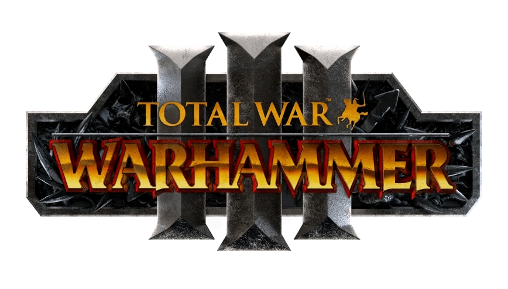

Warhammer and strategy games have been going had in hand for about as long as I’ve been alive, meaning it’s only natural for there to be some less than adequate games (Dawn of War III), so grab your codex Astartes and a cup of god’s blood and enjoy my highly unfair and judgemental opinions on the games: Warhammer III and Dawn of War, aka the best strategy games ever made (That aren't made or owned by Paradox)
In 2022 Creative Assembly, the makers of the Total War brand of strategy games released the third installment of the Total War: Warhammer series, this new entry focuses around the disappearance of the Kislevite god “Ursun”, the bear god and the growing power of Be'lakor, the firstborn son of Chaos. The game itself is functionally the same as any other total war game, good graphics, solid gameplay and very few performance issues. In general a good game, the best of the series and a solid 4/5 stars but keep reading for the different factions ratings. Notice: I will not be reviewing every faction in Immortal Empires, only the base game playables because walls of text aren't fun to look at.
One of Total War: Warhammer III’s main selling points was the addition of Grand Cathay, a realm of humans that hasn’t ever been explored in either the tabletop game or the prior Total War: Warhammer games, the addition of Grand Cathay really adds to the immersion because it’s no longer just some space filling empire that exists so that the writers can be lazy, now it’s built up, it has technology rivaling and even surpassing that of the Empire of Sigmar and it’s ruled by the great dragon Emperor and his children who are the catalyst for the Cathayian campaign’s plotline. Now initially in the campaign the Dragon Emperor’s Children are dismissive of Ursun’s struggle for they’re far older than any of the human gods and see him as beneath them but with the knowledge that Ursun might know where the youngest of the Dragon Children, Shen-Zoo, who disappeared into the chaos wastes (Ikea) centuries ago. From my playthroughs of Cathay both in the campaign and in Immortal Empires I’d give Cathay a solid 4 stars out of 5, the armies are fun to use and the campaign is great but some of the mechanics are finicky at best and downright irritating at worst and can at times make the game unplayable. Final opinion on Cathay: 3/5 stars.
When I first heard that Kislev would be playable in Total War: Warhammer III I was overjoyed, the idea of the nation of humans who are the first and most effective line of defense for the forces of order against the ruinous powers finally being playable just sounded too good to be true, and I was wrong, Kislev's campaign is very well written, the mechanics like "Our Blood" are fun to use and the unit roster is small but still varied, sure the ending of the campaign is a bit corny and undermines the urgency of the plotline in the first place, with Ursun being revived by the faith of the Kislevites. My final faction opinion for kislev is 4.5/5 stars.
Chaos, oh boy Chaos, the arch enemy, the ruinous powers and the worst playable faction(s) I have ever seen. The chaotic campaigns started out fun, you got to conquer your neighbors to empower your respective god: Khorne, Slaanesh, Nurgle or Tzeentch (my spirit animal) but the ending is where it falls flat, Your efforts are all for nothing, Slaanesh was already feeding off Ursun’s suffering, Tzeentch was going to Screw Kairos over anyways, Khorne never forgives Skarbrand and Nurgle simply won’t allow Ku’Gath to brew the god-pox. The units aren’t even fun either, I get it, each army has their thing but when you have to play a specific way because yur units are all one trick ponies it’s just boring, only Chaos undivided is fun to play and you have to unlock them by playing through the different campaigns. Honestly I’m just disappointed with how they turned out since Chaos is meant to be the big enemy in Warhammer Fantasy (Except for the rats) and when the mechanics are just gimmicks that are more annoying to use than anything then you know you’ve got problems, add that up with the disappointing campaign and the lackluster units and it’s just plain not fun, final opinion: 1/5 stars
In the grim darkness of the far future, there is only war … and rampant kleptomania, so now that the mandatory grimdarkness has been stated let's talked about Dawn of War, in 2004 Relic entertainment released the hit RTS Dawn of war, and it was good so they made some DLCs like Winter Assault and Dark Crusade, which brings us to Dawn of War soulstorm, the final all encompassing game edition that this review is about. Now something to understand is that DOW:SS doesn’t have traditional campaigns, instead there’s a map of a solar system where you command your armies to attack certain planets and than fight them out on a battle by battle basis, there are nine playable factions: The Space Marines (40k’s poster child), the Imperial Guard (Cannon Fodder), the Adepta Sororitas/Sisters of Battle (Nuns with Guns), the Orks, The Eldar and Drukhari (Space Elves and Evil Space elves respectively), the Tau (Blue fish alien communists), the Necrons (Robot space Egyptians) and the forces of Chaos (A pantheon of satans), now the gameplay is solid if a bit old and the graphics are pretty painful but for a game that came out almost twenty years ago, it's holding on pretty well, I give it a solid 4.5/5 stars.
The space marines are 40K’s poster children, so naturally their the default army to play as, now the blood ravens start in a pretty precarious position, whilst a standard squad of astartes can easily take down a guardsman or cultist, but when facing stronger infantry they can struggle, but that too can be overcome with support vehicles like a dreadnought Walker or predator MBT. the paint schemes are also really cool and allow you to play as your favourite space marine chapters like the Ultramarines, the Blood Angels or the Iron Hands. the overall the Space marines are fun to play and have a balanced Roster of jack of all trades units, solid 4/5 stars
Space elves are fun, and so are evil space elves with spikes and evil bad guy armor, so why are they so terrible to play? Simple, their too soft, the average eldar/drukhari unit can go zoom across the map and you'd think that'd be good right? well as it turns out in a game where every unit has autolock enabled for combat fast movement doesn't do much, the best units from both factions are magic units meaning every faction has easy counters at fractions of the costs and Eldar/drukhari vehicles can hardley even been called vehicles, the only redeeming quality they have is the Avatar of Khaine, who is honestly a great unit, I've seen an Avatar of khaine singlehandedly depopulate an entire player's space marine army during a 4v4 game once. overall the Eldar and Drukhari are both terrible factions and should only be played if your some sort of masochist who likes space elves and losing every game you play, final opion 2/5 stars.
the Orks are the biggest bunch of homicidal mushrooms you'll ever seen in a RTS, they've got tanky infantry and decent vehicles, they're units are expensive but given the speed of production and the raw stopping power they have, the orks are one of the best playable factions, final opinion: 5/5 stars.
Chaos is actually playable, basically their the space marines but with demons and cultists as additional units, plus the paint schemes are just plain cooler, the Alpha Legion and Night Lords look so cool and the voice lines for the Chaos Armies are purely awesome, gameplay-wise their nearly indistinguishable from the normal space marines but with cooler paint comes a higher grade, final opinion: 5/5 stars.
The adepta Sororitas, or Sisters of Battle were one of the armies introduced in Soulstorm and are an anti-infantry support army, they have excellent standard infantry who can be upgraded with flamethrowers and plasma rifles which only increase their lethality, they lake any proper MBTs or anti armor capabilities which is why it's important to bring support players or AI with armies like the Imperial Guard or Space Marines. the voice lines are meh and if your running a 1v1 game or a purely sororitas team then it can be a pretty miserable match. final opinon: 3/5 stars
The Necrons are cool, plain and simple, lore wise their a race of skeleton robots who enslaved gods and fought and have weapons and equipment unmatched by any other faction save for maybe the Dark Angels, gameplay wise their slow moving, hard hiting infantry who can fight tanks and win most of the time, and a mobile base that can incinerate enemies with lighting, the necrons don't have pain schemes and their voice lines are robotic and cold, but damn they don't need those things to be special, the necrons have very unique looking and functioning units that are fun to use and fun to fight and their introductionary cutscene is the most chilling and nightmare fuel cutscene in the game, final opinion: 5/5 Stars.
The tau suck, all their vehicles are air units meaning they get shreaded by heavy bolters and gauss rifles, they are the weakest units in mele save for their battlesuits which are far too expesnive to be your primary frontline infantry unit, they lack turrets and mines so area denial is out of the question, their voice lines all suck and their paint schemes are just ... mustard yellow and it's disgusting, final opinion: 1/5 stars.
The Imperial guard may seem weak at first, with lackluster basic infantry and no starting vehicles, however their baseline infantry is the single fastest and cheapest infantry in the entire game and a max capacity squad numbers twenty soldiers, compare that to the second highest number of infantry in a squad with the T'au's eight. the entire purpose of the basic conscript squad is to buy time for the techpriests to build more effective buildings which unlock powerful units like the Ogryn heavy infantry, the Leman russ main battle tank and their ultimate unit: The Baneblade super heavy tank, the paint schemes aren't really there and there's no unique models depending on which reigment you choose but ultimately the green tide shall sweep away all opponents of humanity, also the marauder bomber is really powerful, final opinion: 5/5 stars